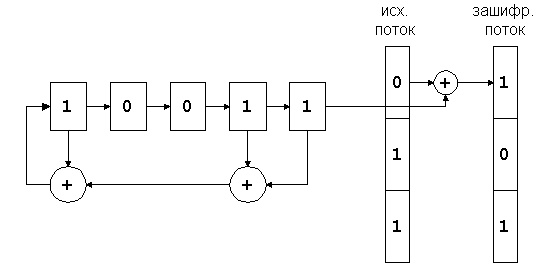
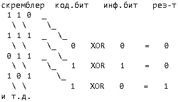

ЛЕКЦИЯ 2ТЕМА 2 - Криптографическая защита информации 2.1 Основные понятия и определения Проблемой защиты информации путем ее преобразования занимается криптология. Криптология разделяется на два направления – криптографию и криптоанализ. Криптография представляет собой совокупность методов преобразования данных, направленных на то, чтобы сделать эти данные бесполезными для противника. Сфера интересов криптоанализа ‑ исследование возможности расшифровывания информации без знания ключей. Ключ — некоторый неизвестный параметр шифра, позволяющий выбрать для шифрования и расшифрования конкретное преобразование из всего множества преобразований, составляющих шифр. Незашифрованное сообщение будем обозначать Р или M, от слов plaintext и message. Зашифрованное сообщение будем называть шифртекстом или криптограммой и обозначать С, от слова ciphertext. Шифрование (С = Ек [Р]) – процесс создания шифрованного текста при наличии ключа. Дешифрование (Р = DK [С]) – восстановление открытого текста или ключа из шифрованного текста. Противник – субъект (или физическое лицо), который не знает и не должен знать ключа или открытого текста, но стремящийся получить его. При этом шифртекст может содержать как новые знаки, так и уже имеющиеся в исходном сообщении. Количество знаков в криптограмме и в исходном тексте в общем случае может различаться. Непременным требованием является возможность однозначного и в полном объеме восстановления исходного текста, используя лишь некоторые логические действия с символами шифртекста. Криптографическая атака – попытка криптоаналитика вызвать отклонения в атакуемой защищенной системе обмена информацией. Успешную криптографическую атаку называют взлом или вскрытие. Примитивные с позиции сегодняшнего дня криптографические методы известны с древнейших времен и некоторое время рассматривались скорее как некоторые ухищрения, чем строгая научная дисциплина. По утверждению ряда специалистов криптография по возрасту - ровесник египетских пирамид. В документах древних цивилизаций – Индии, Египта, Месопотамии – есть сведения о системах и способах составления шифрованных писем. Пробуждение значительного интереса к криптографии и ее последующее развитие началось в XIX веке, что связано с зарождением электросвязи. В XX столетии секретные службы большинства развитых стран стали относиться к этой дисциплине как к обязательному инструменту своей деятельности. Говоря об исторических аспектах научных исследований в области криптографии, необходимо отметить тот факт, что весь период с древних времен до 1949 года можно назвать донаучным периодом, поскольку средства закрытия письменной информации не имели строгого математического обоснования. Поворотным моментом, придавшим криптографии научность и выделившим ее в отдельное направление математики, явилась публикация в 1949 году статьи К. Э. Шеннона "Теория связи в секретных системах. Указанная работа послужила основой развития одноключевых симметричных криптосистем, в которых предполагается обмен секретными ключами между корреспондентами. Впоследствии с учетом особенностей построения симметричные шифры были разделены на две криптосистемы: поточные и блочные шифры. Отличительная особенность первых состоит в преобразовании каждого символа в потоке исходных данных, тогда как вторые осуществляют последовательное преобразование целых блоков данных. Фундаментальным выводом из работы Шеннона стало определение зависимости надежности алгоритма от размера и качества секретного ключа, а также от информационной избыточности исходного текста. Шеннон ввел формальное определение информации и функции ненадежности ключа как его неопределенности при заданном количестве известных битов закрытого текста. Кроме того, им было введено важное понятие расстояния единственности как минимального размера текста, для которого еще возможно однозначное раскрытие исходного текста. Было показано, что расстояние единственности прямо пропорционально длине ключа и обратно пропорционально избыточности исходного текста. Другим фундаментальным толчком развития криптографии явилась публикация и 1976 году статьи У. Диффи и М. Е. Хеллмана "Новые направления в криптографии". В этой работе впервые было показано, что секретность передачи информации может обеспечиваться без обмена секретными ключами. Тем самым была открыта эпоха двухключевых (асимметричных) криптосистем, разновидностями которых являются системы электронной цифровой подписи, тайного электронного голосования, защиты от навязывания ложных сообщений, электронной жеребьевки, идентификации и аутентификации удаленных пользователей и ряд других систем. 2.2. Понятие стойкости шифра В далекие времена надежность сохранения информации в тайне определялась секретностью самого метода преобразования. Однако секретность алгоритма принципиально не может обеспечить его безусловную стойкость, т. е. невозможность чтения криптограммы противником, обладающим бесконечными вычислительными ресурсами. Поскольку секретные алгоритмы не доступны для проведения широкомасштабных криптоаналитических исследований, то по сравнению с открытыми алгоритмами имеется значительно более высокая вероятность того, что впоследствии будут найдены уязвимые места и эффективные способы их взлома. В связи с этими обстоятельствами в настоящее время наиболее широко используются открытые алгоритмы, прошедшие длительное тестирование и обсуждение в открытой криптографической литературе. Стойкость современных криптосистем основывается не на секретности алгоритма, а на секретности некоторой информации сравнительно малого размера, называемой секретным ключом. Ключ используется для управления процессом криптографического преобразования (шифрования) и является легко сменяемым элементом криптосистемы. Ключ может быть заменен пользователями в произвольный момент времени, тогда как сам алгоритм шифровании является долгосрочным элементом криптосистемы и связан с длительным этапом разработки и тестирования. Голландский криптограф Керкхофф (1835—1903) впервые сформулировал правило стойкости шифра, в соответствии с которым:
Второе требование означает, что оппонент не сможет разработать методы, позволяющие снять защиту или определить истинный ключ, за время существенно меньшее, чем время полного (тотального) перебора всего множества возможных секретных ключей. Такой подход отражает очень важный принцип технологии защиты информации: защищенность системы не должна зависеть от секретности чего-либо такого, что невозможно быстро изменить в случае утечки секретной информации. Обычно криптосистема представляет собой совокупность аппаратных и программных средств, которую можно изменить только при значительных затратах времени и средств, тогда как ключ является легко изменяемым объектом. Именно поэтому стойкость криптосистемы определяется только секретностью ключа. Безопасность, обеспечиваемая традиционной криптографией, зависит от нескольких факторов. Во-первых, криптографический алгоритм должен быть достаточно сильным, чтобы передаваемое зашифрованное сообщение невозможно было расшифровать без ключа, используя только различные статистические закономерности зашифрованного сообщения или какие-либо другие способы его анализа. Во-вторых, безопасность передаваемого сообщения должна зависеть от секретности ключа, но не от секретности алгоритма. Алгоритм должен быть проанализирован специалистами, чтобы исключить наличие слабых мест, при которых плохо скрыта взаимосвязь между незашифрованным и зашифрованным сообщениями. К тому же при выполнении этого условия производители могут создавать дешевые аппаратные чипы и свободно распространяемые программы, реализующие данный алгоритм шифрования. В-третьих, алгоритм должен быть таким, чтобы нельзя было узнать ключ, даже зная достаточно много пар (зашифрованное сообщение, незашифрованное сообщение), полученных при шифровании с использованием данного ключа. Принято различать криптоалгоритмы по степени доказуемости их безопасности. Существуют безусловно стойкие, доказуемо стойкие ипредположительно стойкие криптоалгоритмы. Безопасность безусловно стойких криптоалгоритмов основана на доказанных теоремах о невозможности раскрытия ключа. Строго говоря, безусловно стойкими называются шифры (по Шеннону – совершенно секретными), для которых криптоаналитик не может улучшить оценку исходного сообщения M на основе знания криптограммы С по сравнению с оценкой при неизвестной криптограмме. При этом предполагается, что криптоаналитик обладает бесконечными вычислительными ресурсами. Примером безусловно стойкого криптоалгоритма является система с разовым использованием ключей (шифр Вернама) или система квантовой криптографии, основанная на квантовомеханическом принципе неопределенности. Криптосистемы второго типа характеризуются тем, что по мере того, как объем доступной криптоаналитику криптограммы возрастает при определенном значении n=n0, существует единственное решение криптоаналитической задачи. Минимальный объем криптограммы, для которого имеется единственное решение, называется расстоянием единственности. В случае ленты однократного использования n0→∞. При конечной длине секретного ключа значение n0 конечно. Заранее известно, что по криптограмме, имеющей размер больше расстояния единственности можно найти единственное решение криптоаналитической задачи. Однако для криптоаналитика, обладающего ограниченными вычислительными ресурсами, вероятность найти это решение за время, в течение которого информация представляет ценность, чрезвычайно мала (10-30 и менее). Стойкость доказуемо стойких криптоалгоритмов определяется сложностью решения хорошо известной математической задачи, которую пытались решить многие математики и которая является общепризнанно сложной. Примером могут служить системы Диффи-Хеллмана или Ривеста-Шамира-Адельмана, основанные на сложностях соответственно дискретного логарифмирования и разложения целого числа на множители. Предположительно стойкие криптоалгоритмы основаны на сложности решения частной математической задачи, которая не сводится к хорошо известным задачам и которую пытались решить один или несколько человек. Задачи такого типа называются трудными или вычислительно сложными, а об их решении говорится, что оно является вычислительно нереализуемым (или вычислительно неосуществимым). Примерами могут криптоалгоритмы ГОСТ 28147-89, DES, FEAL. Клод Шеннон ввел понятия диффузии и конфузии для описания стойкости алгоритма шифрования. Диффузия – это рассеяние статистических особенностей и закономерностей незашифрованного текста в широком диапазоне статистических особенностей и закономерностей зашифрованного текста. Конфузия – это уничтожение статистической взаимосвязи между зашифрованным текстом и ключом. 2.3. Классификация криптоалгоритмов и типы криптоатак
В отношении криптоалгоритмов существует несколько схем классификации, каждая из которых основана на группе характерных признаков. Таким образом, один и тот же алгоритм "проходит" сразу по нескольким схемам, оказываясь в каждой из них в какой-либо из подгрупп. Основной схемой классификации всех криптоалгоритмов является следующая:
Отправитель и получатель производят над сообщением преобразования, известные только им двоим. Сторонним лицам неизвестен сам алгоритм шифрования. Некоторые специалисты считают, что тайнопись не является криптографией вообще, и автор находит это совершенно справедливым.
Алгоритм воздействия на передаваемые данные известен всем сторонним лицам, но он зависит от некоторого параметра – "ключа", которым обладают только отправитель и получатель. Симметричные криптоалгоритмы Для зашифровки и расшифровки сообщения используется один и тот же блок информации (ключ). Асимметричные криптоалгоритмы Алгоритм таков, что для зашифровки сообщения используется один ("открытый") ключ, известный всем желающим, а для расшифровки – другой ("закрытый"), существующий только у получателя. В зависимости от характера воздействий, производимых над данными, алгоритмы подразделяются на:
В зависимости от размера блока информации криптоалгоритмы делятся на:
Существует четыре основных типа криптоаналитических атак. Конечно, все они формулируются в предположении, что криптоаналитику известны применяемый алгоритм шифрования и шифртексты сообщений.
2.4 Современные приложения криптографии
Значение криптографии выходит далеко за рамки обеспечения секретности данных. По мере все большей автоматизации процессов передачи и обработки информации и интенсификации информационных потоков криптографические методы приобретают уникальное значение. Новые информационные технологии в своей основе имеют двухключевую криптографию, которая позволяет реализовать протоколы, предполагающие, что секретный ключ известен только одному пользователю, т. е. протоколы, ориентированные на взаимное недоверие взаимодействующих сторон. Отметим основные приложения современной криптографии.
2.5. Скремблирование Скремблерами называются программные или аппаратные реализации алгоритма, позволяющего шифровать побитно непрерывные потоки информации. Сам скремблер представляет из себя набор бит, изменяющихся на каждом шаге по определенному алгоритму. После выполнения каждого очередного шага на его выходе появляется шифрующий бит – либо 0, либо 1, который накладывается на текущий бит информационного потока операцией XOR. Суть скремблирования заключается в побитном изменении проходящего через систему потока данных. Практически единственной операцией, используемой в скремблерах является XOR – "побитное исключающее ИЛИ". Параллельно прохождению информационного потока в скремблере по определенному правилу генерируется поток бит – кодирующий поток. Как прямое, так и обратное шифрование осуществляется наложением по XOR кодирующей последовательности на исходную. Генерация кодирующей последовательности бит производится циклически из небольшого начального объема информации – ключа по следующему алгоритму. Из текущего набора бит выбираются значения определенных разрядов и складываются по XOR между собой. Все разряды сдвигаются на 1 бит, а только что полученное значение ("0" или "1") помещается в освободившийся самый младший разряд. Значение, находившееся в самом старшем разряде до сдвига, добавляется в кодирующую последовательность, становясь очередным ее битом (см. рис.2.1).

Рисунок 2.1 – Принцип работы скремблера Из теории передачи данных криптография заимствовала для записи подобных схем двоичную систему записи. По ней изображенный на рисунке скремблер записывается комбинацией "100112" – единицы соответствуют разрядам, с которых снимаются биты для формирования обратной связи. Рассмотрим пример кодирования информационной последовательности 010111 2 скремблером 1012 с начальным ключом 1102.

Рисунок 2.2 – Принцип работы скремблера Декодирование заскремблированных последовательностей происходит по той же самой схеме, что и кодирование. Именно для этого в алгоритмах применяется результирующее кодирование по "исключающему ИЛИ" – схема, однозначно восстановимая при раскодировании без каких-либо дополнительных вычислительных затрат. Следующая лекция - Алгоритмы симметричного шифрования |